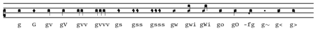
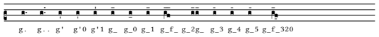
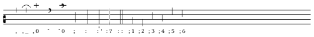
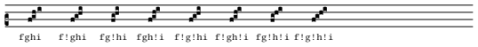
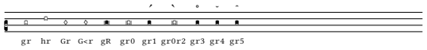

GABC è una semplice notazione basata esclusivamente sui caratteri ASCII, che permette all'utente di descrivere le partiture di canto gregoriano. Il nome GABC fa riferimento alla notazione ABC per la musica moderna. La notazione è stata sviluppata da un monaco dell'Abbazia di Sainte Madeleine du Barroux; è stata poi perfezionata da Élie Roux e da altri monaci della stessa abbazia.
Sul sito ufficiale del progetto Gregorio si
trova una dettagliata descrizione della libreria Gregorio, della notazione GABC e molto altro. Questa documentazione
si basa in gran parte su quella del sito (è stata scritta per avere un riferimento offline).
In particolare, da questo link è possibile
scaricare un riassunto della notazione. Occorre già conoscere le basi del GABC, ma può servire da promemoria.
È impostato per la stampa in formato A5.
C'è anche un prontuario disponibile su
gregoriochant.org.
La documentazione completa (in inglese) di Gregorio e della sintassi GABC si può trovare nel file
GregorioRef.pdf fornito con la libreria Gregorio,
così come la documentazione completa per il linguaggio NABC per la notazione di San Gallo (file
GregorioNabcRef.pdf). Dovrebbero trovarsi entrambi nella cartella
[percorso installazione TeX]/doc/luatex/gregoriotex; la si può comunque individuare con l'istruzione
kpsewhich --all GregorioRef.pdf nel prompt dei comandi (cmd.exe o PowerShell per Windows,
shell per Linux e MacOS).
Sebbene questa pagina riguardi la sintassi GABC, alcune impostazioni possono richiedere l'inserimento di codice
TeX/LaTeX nel file .tex che include la partitura. Tali casi sono evidenziati esplicitamente
(menzionando il file TeX/LaTeX).
Un file GABC è un file di testo diviso in due sezioni, separate da una riga con %%:
name: Amen; %% (c2) A(f)-men.(fg.) (::)
In ogni riga dell'intestazione si assegna il valore di un attributo della partitura, con la sintassi:
nome-attributo: valore attributo;L'intestazione ha un solo campo obbligatorio:
name (il nome del brano). Quasi sempre corrisponde
all'incipit del testo (Veni sanct spiritus) o al momento liturgico (Sanctus), con un eventuale numero
romano progressivo o altri identificativi (Kyrie VIII).
Altri campi (opzionali) hanno un significato particolare per il compilatore:
gabc-copyright: è la notifica del copyright relativa al file GABC stesso (questo copyright
appartiene quindi alla persona che ha trascritto lo spartito in notazione GABC).CC0-1.0 by Elie Roux, 2009 <http://creativecommons.org/publicdomain/zero/1.0/>
score-copyright: è la notifica del copyright relativa allo spartito originale dal quale è stato
trascritto il file GABC.gabc-copyright.
author: l'autore del brano originale (se noto).
language: la lingua del testo del brano (solitamente il latino). Influisce soprattutto sulle regole
di allineamento del testo (vedi la sezione
sull'allineamento).
mode: il modo gregoriano del brano. Può essere un numero da 1 a 8, oppure un testo qualsiasi (per
casi particolari).annotation nell'header,
oppure (b) aggiungendo, nel codice LaTeX che include il file GABC, una \greannotation subito prima
del \gregorioscore.
mode-modifier: è un modificatore per indicare una "variante" del modo gregoriano. Può essere un
testo o codice LaTeX qualsiasi e viene posto subito a fianco dell'indicatore di modo. Viene ignorato se
mode non è specificato.
mode-differentia: ulteriore specifica per il modo (di solito indica la variante del tono salmodico
nelle antifone). Anche questa può essere un codice LaTeX qualsiasi, viene posta di fianco al
mode-modifier e viene ignorata se manca il mode.
annotation: indica l'intera annotazione posta sopra l'iniziale del brano; se specificata,
sovrascrive il modo e i suoi modificatori (ma è sovrascritta da un'eventuale \greannotation nel
file LaTeX).annotation: in tal caso il primo
corrisponde alla prima riga dell'annotazione (di solito un'abbreviazione del momento liturgico; es. Ad
Magnif.) e il secondo alla seconda riga (di solito l'indicazione del modo).staff-lines: numero di righi dello spartito (dev'essere fra 2 e 5 inclusi). Se omesso, vengono
usati i classici 4 righi.
oriscus-orientation: assegna manualmente l'orientazione dell'oriscus; è usato solo in
modalità legacy. Si può tralasciare, poiché normalmente l'orientazione è determinata
automaticamente e si può modificare caso per caso.
Si possono aggiungere altri attributi a piacere nell'intestazione. Normalmente non vengono interpretati, ma è possibile aggiungere nel codice LaTeX un'istruzione del tipo
\gresetheadercapture{commentary}{grecommentary}{} che aggiunge un testo in corsivo, il cui contenuto è preso
dall'attributo corrispondente (nell'esempio, commentary).
La prima indicazione della partitura è la chiave. Si indica tra parentesi ed è formata da:
c per la chiave di Do, f per quella di
Fa);b per un bemolle in chiave;staff-lines dell'intestazione (4 se non
specificato). Esempi: (c1), (fb3).@. Le chiavi verranno posizionate in modo da evitare collisioni. Es.: (c1@c4). Per
determinare automaticamente la posizione del custos viene usata la prima chiave.
La musica vera e propria è costruita sul testo: a ciascuna sillaba viene aggiunta tra parentesi l'indicazione delle
altezze delle note che compongono il neuma. Es. A(f)men.(f)
L'altezza è indicata con una delle 13 lettere dalla a alla m, che corrispondono alle varie
posizioni relative ai righi: [immagine]
Inserendo più note su una sillaba, il compilatore costruisce automaticamente il neuma composito. A ciascuna nota si possono applicare modificatori e spaziature per modificare la forma del neuma (ed eventualmente risolvere casi ambigui), come descritto in seguito.
Gregorio usa una serie di concetti per organizzare le note:
Si possono inserire le alterazioni come fossero note, inserendole nel punto in cui si deve trovare il segno di
alterazione e specificando l'altezza subito prima del simbolo dell'alterazione. Le
alterazioni disponibili sono x (bemolle), y (bequadro) e # (diesis, meno
frequente). Es.: ix (bemolle all'altezza del terzo rigo dal basso).
Il carattere % segna l'inizio di un commento, cioè una parte di codice ignorata dal compilatore.
Il commento inizia dal % e arriva fino a fine riga.
I commenti non generano nulla nel risultato finale, ma servono soprattutto ad aiutare visivamente il programmatore a
riconoscere le varie parti del codice e la loro funzione.
Il carattere $ ha la funzione detta di escape, ossia dice al compilatore di trattare il
carattere seguente come testo anziché interpretarlo in base alla sintassi GABC. Può essere utile ad esempio per
inserire parentesi o altri simboli nelle sillabe.

| Nome | Sintassi GABC (esempio) |
Note |
| Punctum quadratum | g |
Nota di base (senza modificatori). |
| Punctum inclinatum | G |
Ci sono 3 simboli per il punctum inclinatum: ascendente, discendente e unisono. Normalmente il
compilatore sceglie quale usare in base alle note del neuma, ma si può forzare la scelta con
G0 (discendente), G1 (ascendente) o G2 (unisono).
|
| Virga | gv gV |
Normalmente è parte di un neuma composito e viene aggiunta in automatico, ma si può forzare con
v (a destra) o V (a sinistra). Per rimuoverla si antepone @ al
gruppo di note. Esistono anche la bivirga (gvv) e la trivirga
(gvvv), anch'esse con la variante a sinistra.
|
| Stropha | gs gs< |
La seconda variante è liquescente. Anche per la bistropha e la tristropha ci sono le
notazioni abbreviate gss e gsss. |
| Quilisma | gw gW |
La seconda variante (quilisma quadratum) modifica l'allineamento delle note. |
| Oriscus | go gO |
La seconda forma è l'oriscus scapus (collegato alla nota precedente da un gambo). L'oriscus è automaticamente orientato verso la successiva nota non-unisona; per modificare individualmente l'orientazione si usa o0/O0 (verso il basso) e o1/O1 (verso l'alto). |
| Initio debilis | -fg |
Da aggiungere prima del neuma. |
| Liquescentia | g~ g< g> |
Da aggiungere dopo gli altri caratteri che definiscono la singola nota. Le varianti sono (nell'ordine) diminutiva, ascendente e discendente. |
Sono modificatori relativi alla durata. Vanno indicati per ultimi nella definizione di una nota.

| Nome | Sintassi GABC (esempio) |
Note |
| Punctum mora | g. g.. |
Raddoppia la durata. Possono esserci fino a due punti su una singola nota. |
| Ictus / Episema verticale | g' |
Può essercene al massimo uno per nota. Viene posizionato in alto o in basso automaticamente; si può
forzare la posizione con '0 (in basso) o '1 (in alto). |
| Episema orizzontale | g_ g_f_ |
Va aggiunto _ dopo ciascuna nota che fa parte dell'episema. Anche qui la posizione è
automatica, ma si può forzare con _0 (in basso) o _1 (in alto). |
Per gli episemi si possono aggiungere ulteriori specifiche:
_2 previene il collegamento con gli episemi adiacenti. Questo si può anche fare a
livello globale con \gresethepisema{break} nel file LaTeX; il comportamento default è
\gresethepisema{bridge}.
_3 (allineato a sinistra sulla nota), _4
(centrato) o _5 (allineato a destra).
g_502 (episema accorciato allineato
a destra, sotto la nota, non legato a quelli adiacenti).

Si indicano tra parentesi, come se fossero associate a una sillaba "vuota". Esempio:
A(f)men.(fg.) (::)Si possono anche associare a una "sillaba" con un simbolo (esempi:
*(:) , iij(::)); il simbolo
verrà posto sotto il separatore.
Nota: se c'è un segno di punteggiatura nel testo, va messo insieme alla sillaba che lo precede (e non dopo la
nota). Esempio: e(g)jus:(h.) (::) e non e(g)jus(h.) : (::)
Ci sono vari tipi di spazi in GABC, molti dei quali sono calcolati automaticamente dal compilatore.
La cesura neumatica è l'unità di base per gli spazi ed è pari allo spazio che separa i singoli elementi di
uno stesso neuma. Nel codice si indica con / (es. f/h).
Ci sono diversi spazi derivati dalla cesura, che permettono la regolazione fine delle spaziature all'interno dei neumi.
//.
/0.
/[3] è il triplo della cesura normale). Sono accettati numeri non interi (va usato il punto
decimale; es. f/[2.5]). Il fattore può anche essere negativo (es. /[-1]), con
l'effetto di sovrapporre le posizioni orizzontali delle note.
! (es. f!g)
le note sono
separate, mentre col simbolo @ (es. f@g) le note sono collegate da un gambo
verticale (fusione). Questo può essere utile per alcuni neumi complessi, altrimenti difficili da
realizzare.
!/[2]).
Come accennato sopra, il punto esclamativo ! può fungere anche da annullamento di legatura in
alcuni neumi complessi (soprattutto quelli con 3 o più note ascendenti) per risolvere l'ambiguità di scrittura.
Tecnicamente introduce uno "spazio" di larghezza 0 fra le note.

Nel canto gregoriano, allineare i neumi col testo è importante per aiutare il cantore ad associarli correttamente. Di base, Gregorio usa le regole descritte nella pagina sulla scrittura del canto gregoriano; queste regole sono pensate per la lingua latina e si basano principalmente sull'identificazione delle vocali nelle sillabe.
Altre lingue potrebbero avere convenzioni diverse per l'allineamento, o identificare le vocali in modo diverso, o in
generale non dare buoni risultati con le regole del latino. Per risolvere il problema si può usare il campo
language per impostare la lingua; Gregorio cercherà le regole corrispondenti in un file di testo
chiamato gregorio-vowels.dat. Questo file usa una sintassi speciale per descrivere come vanno
identificate le vocali in una sillaba (l'esempio che segue è per la lingua inglese):
alias [english] to [en]; alias [English] to [en]; alias [eng] to [en]; language [en]; vowel aàáâAÀÁÂ; vowel eèéêëEÈÉÊË; vowel iìíîIÌÍÎ; vowel oòóôOÒÓÔ; vowel uùúûUÙÚÛ; vowel yỳýYỲÝ; vowel æǽÆǼ; vowel œŒ; prefix qu Qu qU QU; prefix gu Gu gU GU; prefix y Y; suffix w W; suffix we We wE WE; secondary w W;La sintassi dei vari comandi prevede sempre il nome dell'istruzione all'inizio e un punto e virgola alla fine. Occorre inoltre elencare tutte le possibili combinazioni di lettere maiuscole/minuscole, accenti e segni diacritici. I comandi sono:
alias: nomi alternativi per la stessa lingua, che si possono usare per il campo
language dell'intestazione. Per velocizzare la ricerca è bene metterli prima dell'istruzione
language del file gregorio-vowels.dat.
language: la lingua selezionata. Si applica fino alla successiva istruzione language.
vowel: indica i caratteri da classificare come vocali, separati da spazi. Possono esserci più
istruzioni vowel.
prefix: indica sequenze di caratteri che finiscono per vocale, ma che, se in una sillaba precedono
una sequenza di vocali, non devono essere considerati parte del suono della vocale (ad es. qu in
italiano). Vanno separati da spazi. Possono esserci più istruzioni prefix.
suffix: indica sequenze di caratteri che non iniziano per vocale, ma che, se in una sillaba
compaiono dopo una sequenza di vocali, devono essere considerati parte del suono della vocale (ad es. in
inglese, la w di low). Vanno separati da spazi. Possono esserci più istruzioni
suffix.
secondary: indica sequenze di caratteri che non contengono vocali, ma che definiscono il centro di
allineamento della sillaba se questa non ha vocali. Non ci sono esempi in italiano, ma in alcune lingue esistono
"consonanti sillabiche" (come l e r nella lingua ceca). Vanno separati da spazi. Possono esserci
più istruzioni secondary.
La libreria Gregorio dovrebbe essere distribuita con un file gregorio-vowels.dat che definisce le
regole per l'inglese e per le lingue slave.
en -> English / english / enghu -> Hungarian / hungarian / huncu -> Slavic / slavic / Church Slavic / church slavic / Church Slavonic / church slavonic / Old Church Slavonic / old church slavonic / Old Slavonic / old slavonic / Old Bulgarian / old bulgarian / chu
pl -> Polish / polish / pol (stesse regole di cu)Czech / czech / ces / cze / cs (stesse regole di cu)English / english / eng / en (stesse regole di cu)gregorio-vowels.dat o
modificare quello esistente. Deve trovarsi in un'apposita cartella dell'installazione di Gregorio, che normalmente
dovrebbe essere [percorso installazione TeX]/tex/luatex/gregoriotex; la si può comunque individuare con
l'istruzione kpsewhich --all gregorio-vowels.dat nel prompt dei comandi (cmd.exe o PowerShell per Windows,
shell per Linux e MacOS).
Si può anche specificare individualmente l'allineamento nel file GABC, mettendo tra parentesi graffe la parte della
sillaba che va considerata come vocale. Ad esempio, in Fi(g)gli{o}(f) il neuma sarà allineato con la
o della sillaba -glio.
Infine, si può impostare una regola di allineamento diversa da quella basata sulle vocali tramite un'istruzione nel file TeX. Gregorio fornisce 3 possibili regole:
\gresetlyriccentering{vowel} (default) allinea l'inizio del neuma con il centro della vocale;\gresetlyriccentering{syllable} allinea l'inizio del neuma con il centro dell'intera sillaba;\gresetlyriccentering{firstletter} allinea l'inizio del neuma con la prima lettera della sillaba.
Gregorio rileva automaticamente la fine della riga. Si possono inserire interruzioni di riga manuali con
z, da inserire alla fine della nota dopo la quale si vuole andare a capo (es.
A(f)men.(fg.z)). La riga sarà interrotta e giustificata (ossia il rigo va avanti senza note fino al
bordo della pagina). Per andare a capo senza giustificare (interrompendo quindi il rigo), si usa Z.
Si può prevenire un'interruzione di riga entro un gruppo di sillabe tramite un tag <nlba>
(no-line-break area). I tag di apertura e di chiusura vanno aggiunti come testo alle sillabe. Esempio:
In(g)questo(g)testo,(g)<nlba>qui(g)non(g)si(g)può(g)andare(g)a(g)capo;</nlba>(g)qui(g)sì(g)
Il custos (indicazione della prima nota della prossima riga, posta alla fine della riga corrente) è calcolato
automaticamente, anche in caso di interruzione manuale di riga. Si può disattivare globalmente col comando TeX
\greseteolcustos{manual}. Inoltre, nel caso delle interruzioni manuali di riga, si può decidere caso
per caso aggiungendo + (mostra il custos) o - (nascondilo) dopo il simbolo
z o Z di interruzione di riga. Es.: men.(fg.z-).
Si può anche aggiungere un custos in mezzo a una riga senza ritornare a capo (ad esempio in un cambio di chiave). Per farlo:
z0 prima del cambio (es. a(g) (z0::c4) a(g)).
+, da
aggiungere alla fine della nota (dopo eventuali interruzioni di riga). Es. A(g)men(g. g+).
Il file GABC supporta i caratteri Unicode, quindi è possibile inserirli con una scorciatoia da tastiera (Alt +
sequenza numerica) o con la mappa caratteri. Per i caratteri non-Unicode (ad esempio la A barrata dell'antifona) si
possono usare dei tag <sp> di markup (es. <sp>A/</sp> per il simbolo di
antifona, <sp>'ae</sp> per la vocale doppia ae accentata). In alternativa si può
usare un tag <v> per inserire codice TeX (es. <v>{\ae}</v>; vedi anche
più avanti).
Gregorio rileva automaticamente l'iniziale (la prima lettera del testo) e la stampa in grande all'inizio della
partitura. Si può impostare il numero di righi che deve occupare in altezza tramite il comando TeX
\gresetinitiallines{n}, con un numero intero al posto di n. Mettendo 0, l'iniziale sarà
scritta come testo normale insieme al resto della sillaba.
Se la prima sillaba ha una sola lettera, Gregorio aggiunge automaticamente il trattino di separazione sotto le prime
note. Questo si può disattivare con \gresetemptyfirstsyllablehyphen{auto} nel file TeX.
Non si usa spesso, ma è possibile aggiungere degli stili al testo: <i> per il corsivo
(italic), <b> per il grassetto (bold), <ul> per la
sottolineatura
(underline), <sc> per il maiuscoletto (small capitals) e <c> per
il testo colorato (il colore è preso dalla variabile TeX gregoriocolor; normalmente è il rosso dei
testi
liturgici). Ogni tag va ovviamente chiuso e dev'essere applicato alla singola sillaba (una scrittura come
<c>A(f)men.</c>(fg.) darebbe errore; occorre scrivere
<c>A</c>(f)<c>men.</c>(fg.)).
Sono modificatori poco comuni, ma comunque abbastanza semplici da ottenere.

| Nome | Sintassi GABC (esempio) |
Note |
| Punctum cavum | gr hr Gr G<r |
Funziona anche con il punctum inclinatum e il punctum inclinatum auctus. Nasconde l'eventuale tratto sottostante del rigo. |
| Linea punctum | gR gr0 |
Due varianti, piena e cava. |
| Accentus | gr1 gr0r2 |
Variante normale e inversa. Si può combinare col punctum cavum e la linea punctum. |
| Circulus / semi-circulus | gr3 gr4 gr5 |
Il semi-circulus ha le varianti normale e inversa. Si può combinare col punctum cavum e la linea punctum (ma non con l'Iaccentus; in quel caso vale l'ultimo modificatore aggiunto alla nota). |
Si può aggiungere una seconda linea di testo sotto la prima (che può fungere ad es. da traduzione, o da "seconda
strofa"). Questa è classificata come translation (traduzione) da Gregorio. Si inserisce tra parentesi quadre
dopo ciascuna sillaba (es. Al[Hal](g)le[le](h)lu[lu](h)ia.[jah.](g.)).
Si può fare in modo che una "sillaba" della traduzione si estenda per diverse sillabe del testo principale. Per
farlo si aggiunge la traduzione alla sillaba iniziale, mentre all'ultima si aggiunge / (a quelle
centrali non si aggiunge nulla). Es.: Ky[Signore](h)ri(f)e[/](f).
La traduzione è allineata a sinistra con la sillaba principale. Si può allineare al centre col comando TeX
\gresettranslationcentering{center}.
Poiché la traduzione non va a capo in automatico a fine riga, può essere necessario un po' di lavoro di correzione.
Si può anche aggiungere un testo sopra il rigo. Ci sono due metodi.
<alt> (above-lines text), ad es.
a<alt>esempio</alt>(ghi). Il testo sarà allineato alla prima nota del neuma
corrispondente.
[alt:testo] fra le note, ad es. a(gh[alt:esempio]i). Il testo sarà
allineato alla nota successiva; se è inserito dopo l'ultima nota, sarà allineato alla prima nota del neuma.
Sono indicazioni inserite a fianco della nota. Si aggiungono con [cs:c] subito dopo la nota (si
sostituisca la c dopo i due punti con il segno corale desiderato). Es.: a(fg[cs:m]i)
A partire dalla versione 4.1 di Gregorio si possono inserire le elisioni, cioè sillabe senza un neuma
associato che vengono cantate rapidamente come parte di un'altra sillaba. L'elisione si racchiude in un tag
<e> (es. cla<e>re</e>(fh)). La sillaba entro il tag di elisione è
ignorata nel calcolo delle vocali e le viene applicato uno stile definito dalla variabile TeX
elisionstyle (di default è in corsivo e in piccolo).
In un blocco verbatim il contenuto non va interpretato come codice GABC, ma come codice TeX; quel codice
verrà quindi interpretato non dalla libreria Gregorio, ma dal compilatore lualatex. Si può aggiungere
sia nel testo che fra le note.
Se un verbatim è aggiunto alle note, di solito non conviene usarlo per elementi visivi come scritte o
simboli, perché verrebbero mostrati in linea con il testo cantato (potenzialmente sovrapponendosi ad esso). Può però
essere utile per sovrascrivere localmente impostazioni di Gregorio, come \gresetlyriccentering{vowel}.
Il tag <v> inserisce un verbatim nel testo di una sillaba (es.
a<v>(men.)</v>(fg) stamperà il testo a(men.) sotto le note).
Si può inserire un verbatim anche fra le note. Ci sono tre modi, tutti con sintassi simile (si sostituisca
\codiceTeX con il codice TeX desiderato):
[nv:\codiceTeX] lo aggiunge a livello di nota, senza modificare il glifo (es.
a(fg[nv:\codiceTeX]i));
[gv:\codiceTeX] lo aggiunge a livello di glifo, interrompendo il glifo stesso ma non l'elemento;
[ev:\codiceTeX] lo aggiunge a livello di elemento (= gruppo di note contigue), interrompendo
l'elemento senza aggiungere spazi neumatici (che si possono comunque aggiungere a mano).Per comodità si possono definire fino 10 macro, ossia notazioni abbreviate che corrispondono a del codice TeX. Le macro vanno definite nell'intestazione, con questa sintassi:
def-m0: \codiceTeXIl nome della macro va da
m0 a m9. Sono utilizzabili nelle note, a livello di nota, glifo o
elemento (es. a(fg[nm0]i)).
Il canto gregoriano è prettamente monodico; tuttavia i primi brani polifonici furono scritti in notazione quadrata. Il supporto di GABC alla polifonia è piuttosto limitato e permette di inserire semplici omofonie.
Per inserire due note in polifonia, la prima di esse va racchiusa tra parentesi graffe: {fr}hr. Per
aggiungere altre note, si alternano le note tra graffe alle note senza graffe. La prima nota deve sempre essere tra
graffe.
Il sistema automatico usa solo le note senza graffe per calcolare gli spazi e non riesce a rilevare le collisioni
fra le due "voci". La spaziatura e la posizione delle note vanno quindi aggiustate manualmente.
Il custos automatico, invece, rileva la prima nota della sillaba (anche se è tra graffe).
Si possono creare parentesi di raggruppamento sopra le note in due modi: con larghezza fissa oppure dinamica.
Per una larghezza fissa si aggiunge, subito dopo la nota iniziale (sinistra), un'annotazione del tipo
[ob:1;6mm] , dove:
o = sopra la riga (over), u =
sotto la riga (under).b = parentesi tonda (brace), cb = parentesi
graffa (curly brace), cba = parentesi graffa con accento. Se la posizione è u,
è accettata solo la parentesi tonda b.0 = bordo destro della nota, 1 = bordo sinistro.a(g[ocb:0;1cm])
Per una larghezza dinamica vanno specificati sia l'ancoraggio sinistro che quello destro, con una sintassi
simile alla precedente ma senza il punto-e-virgola e l'indicazione di larghezza; al loro posto si aggiunge
{ per l'ancoraggio sinistro e } per quello destro. Esempio:
A(g[ob:1{])men.(g[ob:1}]). La forma e la posizione verticale devono coincidere per la stessa parentesi,
mentre il punto di ancoraggio può essere diverso fra destra e sinistra.
Nota: Per le parentesi dinamiche occorre compilare due volte (senza modificare il file tra i due passaggi). Al primo passaggio la parentesi è disegnata con la larghezza minima e vengono calcolate (e salvate in un file a parte) le posizioni corrette delle parentesi; al secondo passaggio vengono recuperate le informazioni e disegnate correttamente le parentesi.